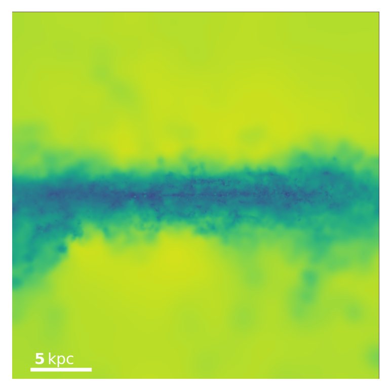
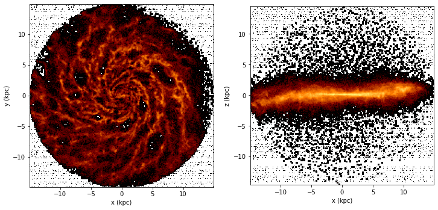
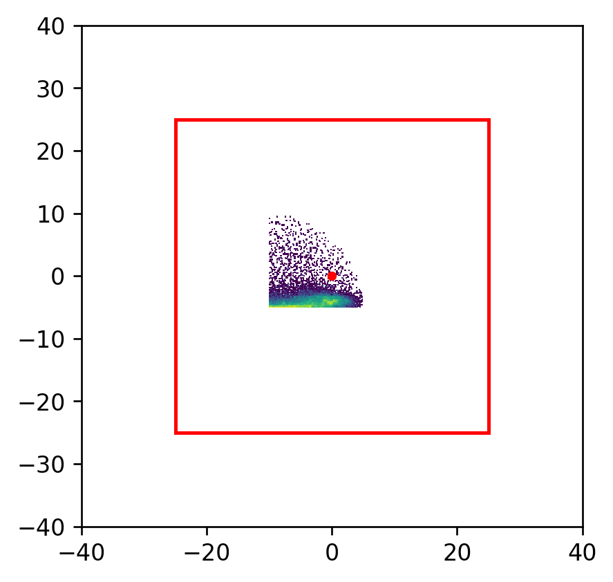

Untitled.ipynb
[1]:
from abg_python.galaxy.gal_utils import Galaxy
import matplotlib.pyplot as plt
%matplotlib inline
import numpy as np
%load_ext autoreload
%autoreload 2
[2]:
plt.rcParams['figure.dpi'] = 240
[3]:
galaxy = Galaxy('m12b_res57000',600)
Couldn't find a metadata file... for
Metadata object at /Users/agurvich/scratch/data/metal_diffusion/m12b_res57000/metadata/meta_Galaxy_600.hdf5
No rstar 1/2 in halo or metadata files, we will need to calculate it ourselves.
/Users/agurvich/miniconda3/envs/firefly/lib/python3.9/site-packages/numpy/core/_asarray.py:171: VisibleDeprecationWarning: Creating an ndarray from ragged nested sequences (which is a list-or-tuple of lists-or-tuples-or ndarrays with different lengths or shapes) is deprecated. If you meant to do this, you must specify 'dtype=object' when creating the ndarray.
return array(a, dtype, copy=False, order=order, subok=True)
[4]:
galaxy.extractMainHalo(use_saved_subsnapshots=False)
cache star_extract compute_rstar_half(m12b_res57000 at 600,){} fail :[ No unloaded or loaded metadata attrs matches star_extract_rstar_half!
Loading star particles of m12b_res57000 at 600 at /Users/agurvich/snaps/metal_diffusion/m12b_res57000/output
compute_rstar_half(m12b_res57000 at 600,){} 3.56 s elapsed
Failed to open saved sub-snapshots AssertionError('Told not to use saved sub-snapshots')
Loading gas particles of m12b_res57000 at 600 at /Users/agurvich/snaps/metal_diffusion/m12b_res57000/output
Loading dark matter particles of m12b_res57000 at 600 at /Users/agurvich/snaps/metal_diffusion/m12b_res57000/output
Reorienting...
Done.
extract_halo_inner(m12b_res57000 at 600,){'orient_stars': True, 'use_saved_subsnapshots': False} 20.71 s elapsed
Snapshot memory free
[4]:
(12.27201256901771,
True,
13.610546783496492,
-23.753615253930974,
331.60968,
2.454402513803542,
140.56429531755958)
[5]:
%matplotlib inline
[6]:
from firestudio.interpolate.interpolate import InterpolationHandler
[10]:
interp_handler = InterpolationHandler(20,13,13.805,fps=16)
interp_handler.scene_handler.add_keyframe(2.5,quaternion=[.707,.707,0,0])
interp_handler.scene_handler.add_keyframe(2.5,scale_line_length=15)
interp_handler.scene_handler.add_keyframe(5)
interp_handler.scene_handler.add_keyframe(2.5,quaternion=[1,0,0,0])
interp_handler.scene_handler.add_keyframe(2.5,scale_line_length=30)
interp_handler.scene_handler.add_keyframe(5)
hello
SceneInterpolationHandler(41/320 frames (2 keyframes) - ['quaternion'])
SceneInterpolationHandler(81/320 frames (3 keyframes) - ['quaternion', 'scale_line_length'])
SceneInterpolationHandler(161/320 frames (4 keyframes) - ['quaternion', 'scale_line_length'])
SceneInterpolationHandler(201/320 frames (5 keyframes) - ['quaternion', 'scale_line_length'])
SceneInterpolationHandler(241/320 frames (6 keyframes) - ['quaternion', 'scale_line_length'])
time since last keyframe too large, this segment (241 + 80 frames) would exceed total duration: 320 frames (20 sec)... clipping to 79 frames instead
SceneInterpolationHandler(320/320 frames (7 keyframes) - ['quaternion', 'scale_line_length'])
[14]:
interp_handler.interpolateAndRender({'name':'m12b_res57000'})
0 [555 556] [12.995635 13.018571]
loading 555 from disk
Couldn't find a metadata file... for
Metadata object at /Users/agurvich/scratch/data/metal_diffusion/m12b_res57000/metadata/meta_Galaxy_555.hdf5
Couldn't find header.
Snapshot 555 not found in /Users/agurvich/snaps/metal_diffusion/m12b_res57000/output
---------------------------------------------------------------------------
AssertionError Traceback (most recent call last)
~/python/abg_python/galaxy/metadata_utils.py in wrapper(*func_args, **func_kwargs)
464 if not use_metadata:
--> 465 raise AssertionError("Told to not use metadata.")
466
AssertionError: Told to not use metadata.
During handling of the above exception, another exception occurred:
AttributeError Traceback (most recent call last)
<ipython-input-14-6fd3b9f66cf1> in <module>
----> 1 interp_handler.interpolateAndRender({'name':'m12b_res57000'})
~/python/firestudio/interpolate/interpolate.py in interpolateAndRender(self, galaxy_kwargs, studio_kwargs, render_kwargs, savefig, which_studio, multi_threads)
70 #this_kwargs.update(time_kwargs)
71
---> 72 return self.time_handler.interpolateAndRender(
73 galaxy_kwargs, ## only 1 dict, shared by all frames
74 frame_kwargss=frame_kwargss, ## nframe dicts, 1 for each frame
~/python/firestudio/interpolate/time_interpolate.py in interpolateAndRender(self, galaxy_kwargs, frame_kwargss, studio_kwargs, render_kwargs, savefig, which_studio, multi_threads)
101 if multi_threads == 1:
102 ## collect positional arguments for worker_function
--> 103 return single_threaded_control_flow(
104 which_studio,
105 self.times_gyr,
~/python/firestudio/interpolate/time_helper.py in single_threaded_control_flow(which_studio, times, snap_pairs, snap_pair_times, galaxy_kwargs, studio_kwargs, render_kwargs, savefigs)
82 ## determine if the galaxies in the pair are actually
83 ## changed, and if so, open their data from the disk.
---> 84 prev_galaxy,next_galaxy,changed = load_gals_from_disk(
85 prev_snapnum,next_snapnum,
86 pair,
~/python/firestudio/interpolate/time_helper.py in load_gals_from_disk(prev_snapnum, next_snapnum, pair, prev_galaxy, next_galaxy, testing, **kwargs)
157 if not testing:
158 prev_galaxy = Galaxy(snapnum=pair[0],**kwargs)
--> 159 prev_galaxy.extractMainHalo()
160 else: prev_galaxy = pair[0]
161 changed = True
~/python/abg_python/galaxy/gal_utils.py in extractMainHalo(self, save_meta, orient_stars, overwrite_full_snaps_with_rotated_versions, free_mem, extract_DM, loud, **kwargs)
885 self.rgas_half)
886
--> 887 return_value = extract_halo_inner(
888 self,
889 orient_stars=orient_stars,
~/python/abg_python/galaxy/metadata_utils.py in wrapper(*func_args, **func_kwargs)
498 init = time.time()
499 ## go ahead and actually call the function
--> 500 return_value = func(*func_args,**func_kwargs)
501 duration = time.time()-init
502 if loud:
~/python/abg_python/galaxy/gal_utils.py in extract_halo_inner(self, orient_stars, radius, use_saved_subsnapshots, force, force_theta_TB, force_phi_TB)
701 ## handle default remappings
702
--> 703 if self.scom is None:
704 self.load_stars()
705 self.scom = iterativeCoM(
AttributeError: 'Galaxy' object has no attribute 'scom'
[68]:
time_handler = foo(2*60,15,10,13.805,None)
TimeInterpolationHandler with 1800 snapshot pairs:
[[...],
[589,590],
[590,591],
[591,592],
[592,593],
[593,594],
[594,595],
[595,596],
[596,597],
[597,598],
[598,599]]
[84]:
Scene(camera_pos=[15,0,0],camera_focus=[0,1,0])
[84]:
Scene(['quaternion'])
[87]:
a= {1:2}
a.update({3:5})
[87]:
{1: 2, 3: 5}
[72]:
time_handler.frame_kwargs[:10]
[72]:
[{'time_gyr': 10.0,
'snap_pair': array([431, 432]),
'snap_pair_time': array([ 9.997467, 10.022765])},
{'time_gyr': 10.002115063924402,
'snap_pair': array([431, 432]),
'snap_pair_time': array([ 9.997467, 10.022765])},
{'time_gyr': 10.004230127848805,
'snap_pair': array([431, 432]),
'snap_pair_time': array([ 9.997467, 10.022765])},
{'time_gyr': 10.006345191773207,
'snap_pair': array([431, 432]),
'snap_pair_time': array([ 9.997467, 10.022765])},
{'time_gyr': 10.00846025569761,
'snap_pair': array([431, 432]),
'snap_pair_time': array([ 9.997467, 10.022765])},
{'time_gyr': 10.010575319622012,
'snap_pair': array([431, 432]),
'snap_pair_time': array([ 9.997467, 10.022765])},
{'time_gyr': 10.012690383546415,
'snap_pair': array([431, 432]),
'snap_pair_time': array([ 9.997467, 10.022765])},
{'time_gyr': 10.014805447470817,
'snap_pair': array([431, 432]),
'snap_pair_time': array([ 9.997467, 10.022765])},
{'time_gyr': 10.01692051139522,
'snap_pair': array([431, 432]),
'snap_pair_time': array([ 9.997467, 10.022765])},
{'time_gyr': 10.019035575319622,
'snap_pair': array([431, 432]),
'snap_pair_time': array([ 9.997467, 10.022765])}]
[30]:
my_studio.render(
plt.gca(),
weight_name='Masses',
quantity_name='Temperature',
quantity_adjustment_function=np.log10,
min_quantity=2,
max_quantity=7)
print()
cache npix1200_width15.00kpc_depth15.00kpc_x0.00_y0.00_z0.00_quat_0.50_-0.50_-0.50_-0.50_aspect1.00 inner_weight_along_los(GasStudio instance, None, 'Masses', None, 'Temperature'){} success!
min_Temperature = 2
max_Temperature = 7
Image range (Temperature): 2.9986382 6.6820135
Image range (8bit): 50.930546 238.78268

[28]:
galaxy.drawGasGalaxy(radius=15)
[28]:
(<Figure size 864x432 with 2 Axes>,
<AxesSubplot:xlabel='x (kpc)', ylabel='y (kpc)'>,
<AxesSubplot:xlabel='x (kpc)', ylabel='z (kpc)'>)

[6]:
from matplotlib.colors import LogNorm
[7]:
from firestudio.utils.camera_utils import Camera
[136]:
camera_pos = [25,0,0]
camera_focus=[0,0,0]
camera = Camera(camera_pos,camera_focus)
print(camera.quaternion)
np.round(camera.quat_rot_matrix,2)
0.0 -90.0 0
[ 0.70710678 0. -0.70710678 0. ]
[136]:
array([[-0.41, -0. , -1. ],
[ 0. , 0.59, -0. ],
[ 1. , 0. , -0.41]])
[153]:
np.arccos(0.70710678)*2/np.pi*180
[153]:
90.00000019228827
[258]:
camera_pos = [10,-25,5]
camera_focus=[10,0,5]
camera = Camera(camera_pos,camera_focus)
np.round(camera.quat_rot_matrix,2)
[258]:
array([[ 1., -0., 0.],
[ 0., 0., 1.],
[-0., -1., 0.]])
[5]:
def q_mult(q1, q2):
""" rip """
w1, x1, y1, z1 = q1
w2, x2, y2, z2 = q2
w = w1 * w2 - x1 * x2 - y1 * y2 - z1 * z2 # q1[0]*q2[0] - np.dot(q1[1:],q2[1:])
x = w1 * x2 + x1 * w2 + y1 * z2 - z1 * y2
y = w1 * y2 + y1 * w2 + z1 * x2 - x1 * z2 ## cross terms off by a minus sign
z = w1 * z2 + z1 * w2 + x1 * y2 - y1 * x2
return np.array([w, x, y, z])
[319]:
def my_q_mult(q1,q2):
outer = np.outer(q1,q2)
vector_components = np.cross(np.identity(3),outer[1:,1:])
q3 = np.zeros(4)
signs = np.identity(4)
signs[1:,1:]*=-1
q3[0] = np.trace(signs*outer)
outer[1:,1:] = vector_components
q3[1:] = np.sum(outer,axis=0)[1:]+outer[1:,0]
return q3
def multi_q_mult(q1,q2s):
q1s = q1.reshape(1,4)
outers = np.tensordot(q1s[None,:],q2s[None,:],axes=(0,0))
outers = np.moveaxis(outers,2,1)[0]
vector_componentss = np.cross(np.identity(3)[None,:],outers[:,1:,1:])
q3s = np.zeros((q2s.shape[0],4))
signs = np.identity(4)
signs[1:,1:]*=-1
q3s[:,0] = np.trace(signs[None,:]*outers,axis1=1,axis2=2)
outers[:,1:,1:] = vector_componentss
q3s[:,1:] = np.sum(outers,axis=1)[:,1:]+outers[:,1:,0]
return q3s
def multi_qv_mult(q1,v2s):
q1s = q1.reshape(1,4)
outers = np.tensordot(q1s[None,:],v2s[None,:],axes=(0,0))
outers = np.moveaxis(outers,2,1)[0]
vector_componentss = np.cross(np.identity(3)[None,:],outers[:,1:,:])
v3s = np.zeros((v2s.shape[0],3))+np.nan
outers[:,1:,:] = vector_componentss
v3s[:,:] = np.sum(outers,axis=1)[:,:]#+outers[:,1:,0]
return v3s
[320]:
cs = np.arange(8).reshape(2,4)
cs[:,0] = 0
[321]:
multi_qv_mult(a,cs[:,1:])
[321]:
array([[ 3., 2., 7.],
[ 3., 26., 7.]])
[323]:
multi_q_mult(a,cs)[:,1:]
[323]:
array([[ 3., 2., 7.],
[ 3., 26., 7.]])
[226]:
multi_q_mult(a,np.array([b,a,a+b]))
(3, 3, 3)
[226]:
array([[-357., 67., 137., 137.],
[ -79., 12., 20., 28.],
[-436., 79., 157., 165.]])
[213]:
np.array([my_q_mult(a,b),my_q_mult(a,a),my_q_mult(a,a+b)])
[213]:
array([[-357., 67., 137., 137.],
[ -79., 12., 20., 28.],
[-436., 79., 157., 165.]])
[123]:
np.outer(a,b)
[123]:
array([[ 26, 34, 46, 62],
[ 39, 51, 69, 93],
[ 65, 85, 115, 155],
[ 91, 119, 161, 217]])
[8]:
a = np.array([2,3,5,7])
b = np.array([13,17,23,31])
[13]:
q_mult(a,b),q_mult(b,a)
[13]:
(array([-357, 67, 137, 137]), array([-357, 79, 85, 169]))
[10]:
my_q_mult(a,b),my_q_mult(b,a)
[10]:
(array([-357., 67., 137., 137.]), array([-357., 79., 85., 169.]))
[ ]:
[
[0 , x1z2 , -x1y2],
[-y1z2, 0 , y1x2 ],
[z1y2 , -z1x2, 0 ]
]
[279]:
string = 'xyz'
vecs = np.identity(3)
cross_signs = np.zeros((4,4))+np.nan
cross_signs[:,0] = 1
cross_signs[0,:] = 1
for i in range(1,4):
for j in range(1,4):
cross_signs[i,j] = np.sum(np.cross(vecs[i-1],vecs[j-1]))
if i ==j: cross_signs[i,j] = -1
cross_signs
[279]:
array([[ 1., 1., 1., 1.],
[ 1., -1., 1., -1.],
[ 1., -1., -1., 1.],
[ 1., 1., -1., -1.]])
[ ]:
[
['w1w2','w1x2','w1y2','w1z2'],
['x1w2','x1x2','x1y2','x1z2'],
['y1w2','y1x2','y1y2','y1z2'],
['z1w2','z1x2','z1y2','z1z2']
]
[289]:
print(np.outer(a,b)[1:,1:])
[[ 51 69 93]
[ 85 115 155]
[119 161 217]]
[259]:
coords = galaxy.sub_snap['Coordinates']
rmask = np.logical_and(np.sum(coords**2,axis=1)<15**2,coords[:,2]>0)
rmask = np.logical_and(rmask,coords[:,0]>0)
new_coords,_ = camera.clip(coords[rmask],None)
plt.hist2d(new_coords[:,0],new_coords[:,1],bins=100,norm=LogNorm())
ax = plt.gca()
ax.plot(0,0,'.',c='red')
px = np.linalg.norm(np.array(camera.camera_pos)-camera.camera_focus)
ax.plot([-px,px],[px,px],ls='-',c='r')
ax.plot([-px,px],[-px,-px],ls='-',c='r')
ax.plot([px,px],[-px,px],ls='-',c='r')
ax.plot([-px,-px],[-px,px],ls='-',c='r')
ax.set_xlim(-40,40)
ax.set_ylim(-40,40)
ax.set_aspect(1)
print()
[ 0.70710678 -0.70710678 0. 0. ]

[ ]:
[ ]: